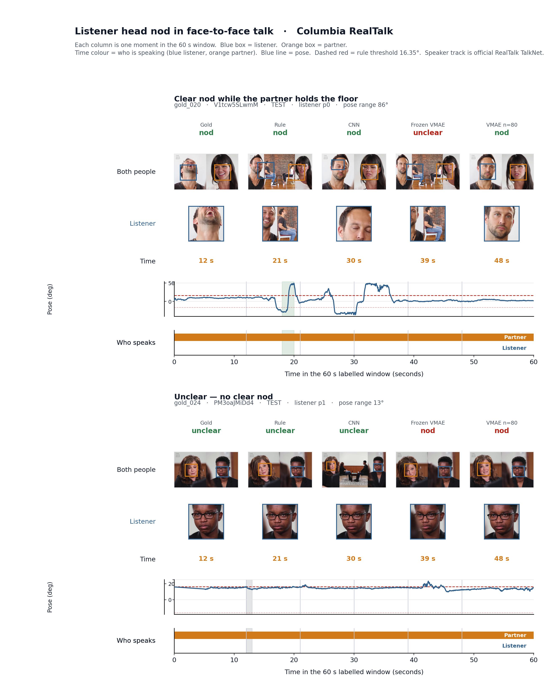
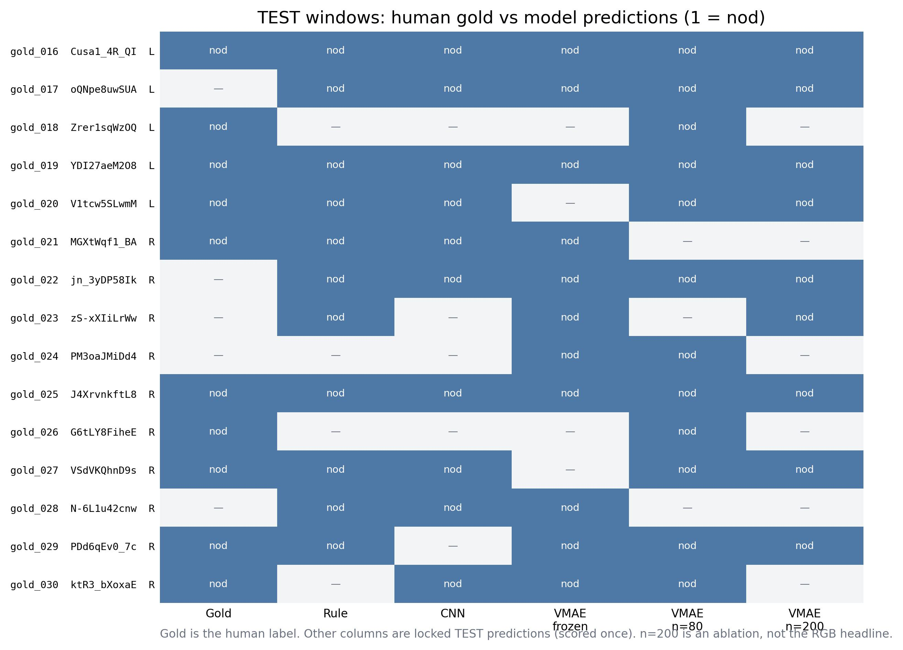
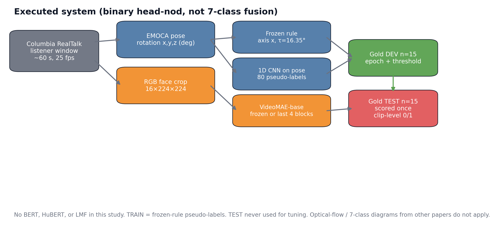
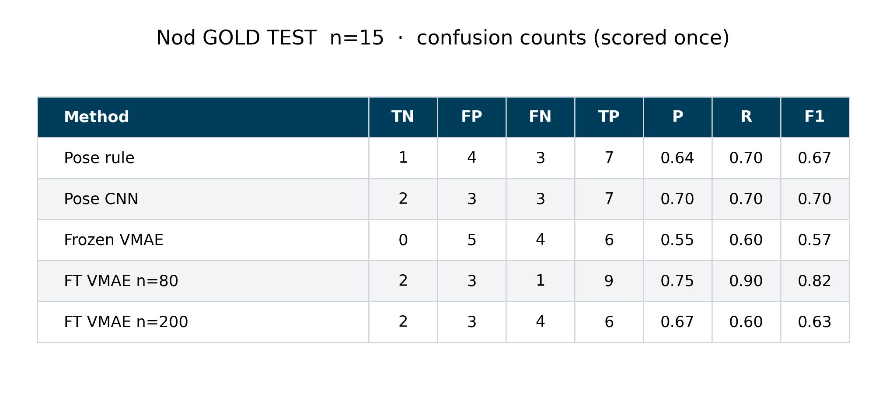
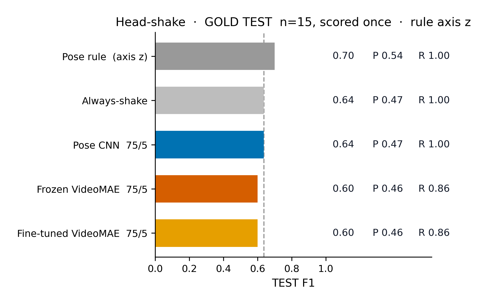

Multimodal
Backchannel
Recognition
Recognising listener head nods and head shakes from head pose and video in natural conversation.
Did this listener nod?
The study is clip level listener behaviour recognition on Columbia RealTalk. A nod may last about one second. The analysed conversational window lasts about sixty. Pose and RGB are two encodings of the same camera.

A hand-annotated gold set of 30 conversational windows, split 15 DEV / 15 TEST, with TEST scored once under a frozen protocol.
A weak-supervision pipeline that trains temporal pose and VideoMAE systems from a DEV-frozen pose rule, without gold labels on TRAIN.
An evaluation harness that refuses writes to locked TEST directories, asserts that refusal in tests, and recomputes every reported metric from stored predictions.
pitch(t)
EMOCA Euler rotation on locked TEST window gold_016. The marked band is the human-labelled nod interval, in the watch clock, one second inside a sixty-second window. Scored systems in this dissertation are an amplitude rule, a 1D CNN, and VideoMAE they are not an FFT classifier.
Thirty windows, read by hand.
is clip-level: clear nod or unclear. Unclear is the complement, not a second behaviour class. is whatever a system later assigns to that whole window.
30 gold windows · 15 DEV · 15 TEST · 19 clear nod · 11 unclear. TEST holds 10 positive and 5 negative windows. One annotator.
A frozen amplitude detector on Euler x.
Savitzky–Golay smoothing, window 11, polynomial 2. Threshold selected on DEV only: 16.3538328545911°, shown as 16.35°.
A 1D CNN on pose sequences.
The network sees Euler plus derivatives. Training labels are pseudo-labels from the frozen rule, not gold. DEV selects the checkpoint. TEST is scored once.
From a trajectory to sixteen frames.
RGB 16 × 224 × 224 face crops from the same camera as the pose. Frozen VideoMAE uses a linear head on a frozen encoder. Fine-tuning adapts the last four blocks. These numbers are saved TEST predictions. VideoMAE does not run in the browser.
The 0.82 point estimate sits 0.02 above the always-positive baseline (F1 0.80) on fifteen windows, inside the bootstrap interval 0.60–0.96. It is not a claim of statistical superiority.

More weak labels did not improve the locked score.
Increasing the quantity of weak labels did not monotonically improve the locked TEST point estimate. One plausible explanation is greater exposure to systematic noise from the rule-based teacher. With n = 15, this is an observed trend, not a proven cause.
TEST leaves the pipeline before development.
The working disk was capped at 25 GB. That ceiling is why the pipeline used selective extraction, derived Euler features and weak supervision rather than retaining the full RealTalk video and EMOCA archive. The constraint shaped the method.

The lock is part of the artefact.
Locked TEST directories sit on a write-refusal list. The test suite asserts that those writes are refused. Every TEST F1 on this page can be recomputed from stored prediction CSVs. No TEST inference is required to validate the numbers.
Point estimates on fifteen windows.
Bootstrap 95% interval on the 0.82 run: 0.60–0.96.

RGB lost to a simple pose rule.
Same thirty gold windows, same frozen protocol, a different label: clear shake or not. TEST was scored once. The pose rule is the headline. Fine-tuned VideoMAE did not beat it.
After scoring, a geometric audit placed shake on yaw (y), not roll (z). The locked TEST artefacts stay on z. They were not rewritten.

Head pitch on a locked TEST window.
The pose rule is recomputed interactively from stored pose data. Pose CNN and VideoMAE are saved predictions from the locked TEST evaluation. The original RealTalk video is not hosted. Drag the plot to move through the sequence. Play, Pause and Restart sit under the plot.
Head pitch
The constraints are part of the result.
- Gold setFifteen TEST windows. Too small for statistical superiority.
- AnnotatorOne person labelled the gold set. There is no second-reader agreement.
- Weak labelsTRAIN is rule pseudo-labels, not gold.
- CameraPose and RGB are two encodings of one camera, not two sensory modalities.
- Shake axisLocked shake TEST used roll (z). A later audit placed shake on yaw (y). TEST was not rescored.
From prediction to presence.
The next step is to drive a generative listener avatar from predicted backchannel events. Predicted nods and head motion would condition a listener that is visible while it listens. That system is not in this dissertation.
- 01Speaker
- 02Predicted backchannel
- 03Generative avatar
- 04Responsive listener